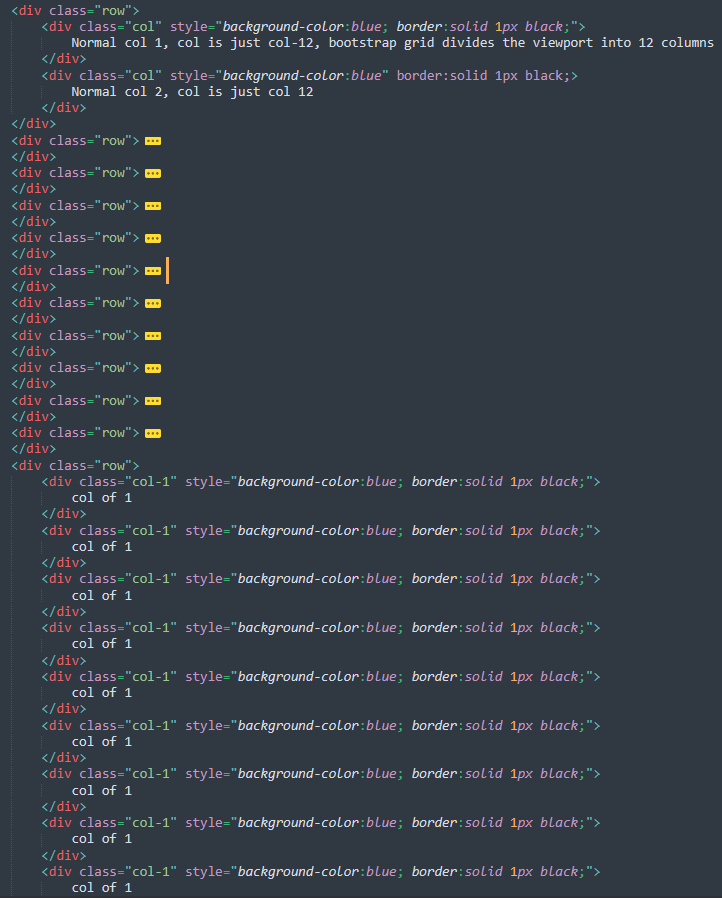
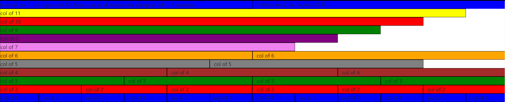

Websites are made of HTML, CSS and JS files. A website can't function with CSS or JS files alone.
But a website can work be made with HTML file alone.
HTML = Hyper Text Markup Language
HyperText = Parts of text that link to other documents
Markup Language = HTML Tags. People used to mark parts of a text with certain rules to denote which needs to be italicized, bold, etc., similarly HTML is a markup language that uses HTML tags to do the same.
HTML tags
Anatomy of HTML Tag
Self closing tags
Some tags require both start and end tag. But some are self closing meaning they don't require a closing tag
For example: the <br> tag
HTML attributes
Attributes lets us specify some rules about the function or appearance of the tag.
For example, the <hr> is called a Horizontal rule tag that creates a horizontal line. with the attribute called size we can define the thickness of the horizontal line
<hr size="3"> will make the line 3 pixel thinkness
For Multiline comment, use the "-->" on a different line and type the text in between them
The HTML Boilerplate
Doctype
The <!DOCTYPE html> tells the browser which version of html the file was written in. The latest version is the html5 and the above line denotes html5
html tag
Every element in the html file will be inside the <html> </html> tag. Actually the contents go inside the body tag and the body tag is inside the html tag itself
html tag has an attribute called lang which denotes in which language the text content of the website is written in. For example, <html> lang="en" denotes that the language is in english
Its not important for those who can see and read the page. But it's important for the people who can't as they rely on some computer narrating tools, which requires to know in which language the content is in for the correct pronounciation
Head tag
Important information required for the website is placed inside <head> </head> tag, but its not visible to the user
<meta charset="UTF-8">
For example, it includes the <meta charset="UTF-8"> to denote which charset that the text in the file should use so that the browser can render them correctly. Some character sets may include emojis and some may not. So, it is good practice to always include and use the right charset for the website
<title>
The title tag denotes the title of the page. Its the text that gets displayed in the tabs of the browser.
There are other things that can go inside the head tag, its not discussed here
Body tag
This is where the content of the website goes
Structuring text in HTML
<P> tag
<i> tag vs. <em> tag
The i and em tags both are used to italicize the words. But the em tag not only italicizes but also tells the system narrator to emphasize the word while it being read
<b> tag vs <strong> tag
Similar to the i and the em tags, strong and b tags both are used the make the text inside them stand out by bolding them
But strong is a logical state and b is a physical state.
HTML lists
Unordered lists (<ul>)
Ordered lists (<ol>)
Both these list tags introduces the use of element tag called <li> for each item in the list
We can customize the list, for eg, using Roman numerals instead of numbers in the ordered lists by using attribute: <ol> type="i"
You can also make the list start at a particular number by using the attribute start="number"
HTML Image elements
<img> tag
the <img> tag requires an attribute called src which is called as source, which is the locaction of the image that needs to be displayed
The source can be an online link or a computer directory
In the case of a computer directory, if the .html file as well as the image are in the same directory, then only file name along with the extension (for eg. src="Wallpaper.png") is enough
But if they are in different directory, then the full path of the image is to be entered
Apart from the src attribute, there is another attribute called as alt which stands for alternative text which is used to display a text in case if a browser can't locate or render the image
the alt tag also helps in search optimization and increases ranking of the website by making it easier for google to fetch relevant information
HTML Links and Anchor Tags
The <a> (Anchor) tag
<a> tag is used to include links in the website. It requires an attribute called href which contains the link
after the href attribute, type in the text that needs to be displayed for that link
For example: <a href="https://Google.com">Google's Home Page</a> will look like this: Google's Home Page
HTML Tables
<table> tag
attribute: border="1" - creates a border of 1 pixel thickness
<tr> - Table row - creates a table row
<td> - Table data - contains the cell data
<thead> - Table Head
<th> - Table head cell
<th> elements work even without being inside the <thead> tag as most browsers know where th elements need to be
Then the reason or use of these table head is in situations where we would want to stylize the table headers and data in a different way
Rowspan and Colspan - attirbutes that denote the width and height of the cell respectively in terms of cells
<tbody> - Table Body - contains all the data of the table
<tfoot> - Table Foot
Using HTML Tables for Layout
Using tables to arrange the photo on left and the details on right
Cell spacing
This is a deprecated feature which defines the spacing of data inside the cells in terms of pixels or percentage
HTML Forms
<form> tag
<label> tag
It's the name of the details that are asked in a typical form: Name, D.O.B. These are called labels
<input> tag
type attribute - what datatype must be entered in the input box. submit is also a type.
Text area has two required attributes called rows and columns which is nothing but the length and width of the text area
The text area can be modified from the browswer itself, the rows and cols data denote the initial size of that text area
The form tag has an attribute called action which says what to do when an action like clicking the submit button is performed
The email input type of the form tag automatically checks whether a valid email address was typed
there is an action called mailto which opens up the default mail client with the input that was typed in. This also requires the method="post
For example: action="mailto:kulasekaranslrk@gmail.com" method="post"
There is another form attribute called enctype, which stands for encoding type, which like the UTF-8 in our html document, specifies in what type the form data must be encoded. By specifying this, when using the form, the data will have only the plain text that was typed onto the form (it won't have the extra symbols that will be there when not specified)
Publishing website in GitHub
Create a public repository and add the html files
The website's html file must be named "index.html". This is mandatory otherwise the website will not work.
Make sure all the data sources are pointing the right directory, otherwise they won't show up in the website
Once the files are uploaded, go the repo setting --> Pages --> source --> choose the branch --> save
github will take some time and then refresh the page. There will be a link shown. This link can be shared with anyone and they can see the website without needing any of the files
CSS - Cascading Style Sheet
33. Introduction to CSS
CSS is used to style the website to make it look more appealing which can't be done with HTML alon. Also, CSS along can't do anything without a base HTML
Inline CSS
Changing Background color using css
use "background-colo: colorname;" inside the body tag of the html document to change the background color of the whole page
The customizations above mentioned only applies to the html file that is being worked on. To make it global, that is, to make it get applied to all its sister pages, it needs to be in a external css
External CSS
Creating an external stylesheet
Create a folder named css in the root folder of the html files
Create a file named styles.css
Cut and paste the data inside the <style> </style> into the styles.css file
Now on every html document's head section, add a link tag
This link tag has two attributes: rel meaning relation and href
set the rel="stylesheet" and href="css/styles.css"
This will modify the appearance of all the html files that has this link in their head section
Debugging in CSS
Always use Chrome's web developer tools to check for bugs in the website
Inline css overrides Internal css as well as external css
style precedence is like: Inline > Internal > External
The Anatomy of CSS Syntax
Selector{property:value;}
It is always best practice to have the properties in the styles.css file arranged in alphabetical order for each element. Helps a lot while debugging
The above site lets users use different kinds of emoji from various operating systems
When an img customization is present in a styles.css file, that customization will get applied to all the images that is on the website
To apply different customization to different types of images, For eg: Having the Background color of images that has a dog as red and having the background color of images that has a cat as green, we need to include a class attribute inside the img tag and then target customizations based on classes and not on tags
Lets have two classes as dogs and cats
In the styles.css file, add .dogs{background-color:red;} and .cats{background-color:green;}
The dot(.) in front represent that the following is a class and not a tag
Note: commenting in CSS is done within /* */. Have them on different line for multiline commenting.
Classes vs. Ids
Id selectors
Use the # symbol to target Ids
Note:The customization based on Classes and Ids will override that of the general tag customization. Meaning, Even if for example, an img tag customization is already present, a specific class customization of the img will override the general one
The difference between classes and ids is that, classes can be instanced at more than one places. But Ids cane be instanced only once
For example, if there is a h1 tag with the id="heading", then this id="heading" can't be instanced anywhere else on the code. But the classes="dogs" can be instanced any number of time
They both are used to specifically target the customization across the elements. But classes target a specifig group of elements whereas Ids target a single unique element
A tag can have more than one class name. for example, If all the dog class images needs to be circular, it can be done as: class="dogs circular" And then can be targeted as: .circular{border-radius:100%;}
But a tag can't have two Ids. If more than one id was included, it won't be considered as a valid id and its customizations will not get applied. This is another difference between classes and ids
psuedo classes
The psuedo classes are used to perfom a change in the element when the user, say for example, hovers the mounse pointer over an element (but not clicking it)
Note: The psudo classes begin with a colon(:) in front. The syntax is tag name:pseudo class
For example, There is a pseudo class called :hover. It can be used to make changes to an element only when it is being hovered. To do this:
Go to styles.css
img:hover{background-color:blue;}
This will change the background of the image to blue only when the mouse cursor is brought on top of any image.
Note: The hover customization doesn't work if an inline CSS syling is present as it has the most precedence
Check this: site to learn more about different pseudo classes available
Intermediate CSS
Favicons
A Favicon is a small icon that appears next to the title of the website in the tab bar of the browser
In order to change the favicon of the site, create a link in the headsection of the site.
Instead of the rel="stylesheet" change it to rel="icon" and in the href give the location of the icon file
HTML Divs
The Div element
Its called the Content division element, which divides the page into several divisions and let's customizing the layout of each of them separately
Div is an HTML element and it doesn't do much of anything without CSS
Div by default has a height of 0px Unless anyother height is specified or has contents inside it
Box Model of Website styling
The box model of css: margin, border, padding, content
When a text is displayed in a website, that text has a bounding box, which has a width and height, let's assume 100px each
Padding the the space between the content of the text and its border
The space between borders of two adjacent elements is called as the margin
CSS Display Property
The display property has 4 values: Block, Inline, Inline-block, None
Block elements
Block elements are those which take up the whole width of the viewport unlike imgaes.
So when two paragraphs are inserted, they naturally occur as in new lines, since paragraphs, headings, etc., are block elements
Say, for example, if the "pro" part in a sentence called "a programmer" needs to be underlined, it wont work if it was done as: <p> a</p> <p class="pro"> pro</p> <p>grammer</p> and in the css as: .pro{text-decoration:underline;}
Span Tag - Inline Block elements
To achieve that, a tag called span needs to be used
It is achieved as follows: <p> a <span class="pro">pro</span>grammer</p> and then the Css modification of the class pro
Span tag will be very useful in formatting one part of the text. Just like the div tag, span tag don't do very much unless they are used in conjunction with css
Some common inline elements:
spans
images
Anchors
Spans seem like they have the advantage since they can be stacked next to each other unlike the block elements, so one may think that why block elements are needed anyway
The reason is that, unlike block elements, Inline block element's width can't be adjusted
On the other hand, even if the width of the block element's are adjustable, it still doesn't let other elements to sit next to it
chaning the display value of a block element to inline doesn't do any good because the width can't be changed once it becomes inline
Inline-block elements
This is where Inline - block elements come in which give in the best of both worlds
They can be stacked next to each other and still their widths can be modified
None elements
This display type is like it deletes the element with the display property as none
Imagine a situation in which a quiz is being attended on a site. To hide/show the answer at the click of a button can be made by changing the display property to none and back
There is another property called visibility which when set to hidden will simply hide the element, but the element is still on the website. But when display is set to none, the element stops existing in the site and its place can be occupied by another element
CSS Static and Relative positioning
Position property
Static
The default positioning of all elements
Relative
This positions the element relative to how it would have been positioned had it been static. Say an img would have appeared at 0 margin on the left. if its attribute was changed to position: relative; left: 30px;. Then the image would appear with a gap of 30px on the left
Just by changing the position of an element to relative, no changes will be made unless it is accompanied with one of the four coordinates that mention the change
The coordinates order is: Top, Bottom, Left, Right
NOTE:When an element gets pushed due to relative positioning, it doesn't affect the position of any other element when it gets shifted.
NOTE:Even after the element's change in position, its old posiition is still occupied by the same element. Its like the element hid itself in its original position and moved its copy to the new position, that is relative to the old one
Absolute
Fixed
Absolute Positioning
Absolute Positioning
In abosulte positioning an element is positioned with respect to its parent
For example, if an image was contained within a div, and the img's position was absolute and had right: 30px; then the img will be shifted to position such that it has 30px right margin from the right end of the div's box
Unlike relative positioning, which leaves a ghost of the element behind so it won't affect the other element's positions, absolute positioning does affect the position of other elements when an element gets moved
Fixed Positioning
When an element's position is fixed, it will be still visible even when scrolling throught the page. Like the top bars or the side bars that has the items like contacts, profile being visible even when the page is scrolled down
The dark art of centering elements
Text align property
In the external css, inside the body tag selector, put text-align:center;
This will make all the Inline-block elements like images and the full width block elements like the texts to be aligned at the center of the webpage
To center the elements that are not Inline or not of full width, there is another method which uses margin: 0 auto 0 auto which means margin top is 0, margin right is auto, margin bottom is 0 and margin left is auto
It can also be set by margin: 0 auto, which means margin top and bottom are zero and margin left and right are auto
Font styling in CSS
Common CSS Font families
Cursive
Fantasy
inherit
monospace
This is used mostly for coding as in this font all the letters of a word will be of equal width.
sans-serif
Letter don't have tiny feet linke structures
The default sans-serif font for most browswers is the arial font
serif
For most browsers, the default serif is the Times font
Letters have tiny feet like structures
It's always recommended to use websafe fonts because, when a special font is used for a website, if the user's system or the browser doesn't have that font installed, then it can't render that font and will render the default one, which will make the website look different for them instead of how it should.
CssFontStack.com Visit this site to know which fonts are most commonly used across different operating systems
On this site, when a font is copied, a font stack actually gets copied. For eg. font-family: "helvetica neue",helvetica,arial,sans-serif
The above will work like, if the system has the helvetica neue then it will get displayed, or else the one next to it and so on.
Font embedding
But there is a way to use the font that seems good and still make it get displayed whether or not the user's system's able to render it.
Have a look at: Flaticon, to use cool icons for the site
We can also use GIFs for the site from : Giphy.com
CSS Sizing
NOTE: When a font size of a text is hardcoded in the html, even if the user change the font settings in the browser, say from medium to large, that harcoded element's font alone will remain same and the rest of the texts in the page will change size.
That's because, using px and mentioning font size will the lock the font's size
Dynamic Font Sizing
Use %
NOTE: 100% in font-size means 16px
So, if 90px is needed, then (90/16)*100%, that is 562.5%is needed
Use em
em, is the phonetic pronounciation of the letter 'M'. It is no longer used in current days. In em NOTE: 1em = 16px
90px=5.625em
NOTE: With zooming, it doesn't matter if the text is dynamically or statically sized cause zooming will scale up the whole site
NOTE: say for example, the body tag has a font-size customized as 2em and then the h1 tag has the font size customized as 5em, then in the end the h1 tag will appear as 7em as it inherits the base font-size from its parent, which is the body. And its the same with using percentages. But when the body tag says the font should be 20px and the h1 tag says it needs to 90px, then it will be 90px only
To avoid, such situation, there is a feature in the CSS3, the one that is being used, is called rem - Root em
The rem is used to ignore all the parent settings.
CSS Float and Clear
The Line height - This property is used to change the height between the lines in a paragraph. It doesn't have any units
Float
There is a div containing a pragraph and an image. The image is on top of the text.
By changing the float property of an img tag to, say left, the text which was at the bottom of the image, will now wrap around the image, meaning the image will float on the left, there will be text to the right of it and also to the bottom of it, if the paragraph's height is more than that of the image. Kind of what we see in school books
Clear
This is opposite to what float does. Suppose if only heading is to be wrapped around an image and the paragraph should be at the bottom of the image, by changing the clear property of the text to clear:left will bring it down to the image
Introduction to Bootstrap
What is bootstrap
Bootstrap is a Front-end library
Javascript, CSS, HTML are some of the front end stack
.NET, Ruby, PHP, NodeJS, Java, SQL are some of the backend stack
While the front end give the appearance, the backend provides the functionality to the webpage
Bootstrap was deveoped by twitter and is an open source tool
One main advantage of incorporating Bootstrap is that it makes the website responsive, meaning, the website will alter its appearance automatically depending on the device its being viewed upon from so that the contents will appear as it should and not as broken
It makes the website to have adaptable layout
Remember at the start of the tutorial codepen.io was used as online editor? Now instead of that, Codeply will be used, as it supports front-end frameworks like bootstrap unlike codepen
To get a styled button with a hover state, many lines of CSS code is required. But it can be achieved in just two words using bootstrap
In the HTML file, create a button using the button tag and give its class name as follows: btn-primary
This btn-primary is a pre-defined class in bootstrap for a blue colored button with a hover state
In bootstrap, primary=blue, dark=black. So, for a black colored button, give the class name as btn-dark
Another example is btn-outline-dark, which is button with white fill - black text - black outline that gets filled with black when hovered over
The size can also be alterd by having class name as btn-lg
Head over to Bootstrap website and download the bootstrap files as zip (not the software), and inside the zip there will be a folder named css and inside it a file named bootstrap.css. This file containes lot of predefined classes inside it that are ready to be used on any website
Do visite the examples section as well as the docs section in the bootstrap website in order to understand well while using bootstrap
Bootstrap installation
To install or incoporate Bootstrap into the website, in the head section of the html include a link with the relation as stylesheet. It is important to put this cdn link above the custom created styles.css stylesheet link for the previous customizations to still work
For the href head to the bootstrap site and copy the cdn link. cdn stands for Content Delivery Network
It was learnt in the one of the previous lessons that the Internet is not working via satellites but via underground fibre optic Inter-continental cables laid down all over the world
The point where these cables touch the land will be probaly a data center and there will be other interior data centers as well on the land
The cdn of the bootstrap starts with maxcdn, which means bootstrap is using MaxCDN as their website host, which has a lot of data points set across the world and that means a website made with bootstrap has a lower latency and is easier to load from anywhere in the world
And since a large number of websites already uses bootstrap framework, its very likely that the user must've loaded a bootstrap oriented website in their device at some point in time and if they haven't cleared their cache yet, then the bootstrap.css file will be probably stored in their device and will get applied easily once they load the site
Web Design 101 - Wireframign
Wireframing
Wireframes are low fidelity representation of the website design. It is the first step that should be done when designing a website from scratch
It is meant to be done with pencil and paper and roughly sketch out the layout of where things should be
SneakPeekIt is a cool site that lets users download wireframe template sheet that can be printed out and drawn upon
Another way is to use the industry standard tool called Balsamiq. It is not a free tool.
Mockup
This is kind of opposite of wireframing
Its like taking a screenshot of the website from the future
Visit: awwwards for examples of cool website designs
Then create an unordered list inside the nav and give the list a class name of navbar-nav
Then create an item by using the li and give it a class name of nav-item
Finally create an anchor element inside the item and give it a class name of nav-link
As usual give the href of the anchor tag the appropriate link
An appropriate navbar has been created
But this navbar class will make the navbar items get stacked on top of each other as more elements are added into it. But that's not how a normal navbar looks like
to make the items get arranged next to each other, give an additional class name of navbar-expand-lg next to the already existing navbar class in the nav element
When using lg (large), the navbar will be horizontal on laptop like large width devices and will appear vertical when viewed in smarphone like low width devices
Instead of lg, which means large width devices like laptop, if md (medium) was used, then for both laptop and say tablets, the navbar will be horizontal and for smarphones it will be vertical
To make the navbar appear more clearly, a background class can be added along with the two already added classes. Add bg-light for a very subtle light background navbar
By default, the navbar items will look blue in color, and this can be changed by adding one more class called navbar-light to make them appear with black text color
classes - colors
primary - blue
secondary - gray
success - green
danger - red
warning - yellow
info - light blue
light - white
dark - black
link - text will be blue with underline
.navbar-brand
An element with the class as navbar-brand will appear on the top left corner of the page
ms-auto
From all the above things, the navbar will look with the brand and the three links, all arranged one after the other. But this looks a bit clumsy. To push the links onto the right and keep the brand alone on the left, add a class to the ul tag of the navbar
Add ms-auto. This will create a margin from the start of the unordered list and auto means, it will push the contents to the right as much as possible. m - margin
toggler
Now, the three links are on the righ the navbar with the brand on the left of the navbar. But when the screen size gets so small that its not possible to see all the four of them in a single line, the navbar will get bigger in height and make the links appear vertical
But it will be better if all the three links are visible inside a drop-down list. Well that's what a toggler is for
The toggler is a simple button with three horizontal lines. when clicked on it will show the contents inside it as a drop-down list
Then create a div around the contents that are needed to be collapsed upon and give the div a class name that is given in the data-bs-target inside the toggler, in this case it is toplinks
the fixed-top class can be used inside the navbar to make it fixed to the top so that it won't disappear while scrolling
Setting up our new project
When there is content on the site the navbar will not dropdown. To make it drop down, some java script is actually needed to be embedded into the HTML file.
a script tag with a cdn link of java script from the bootstrap website is needed to be added to the head section of the html file
Bootstrap grid system
Class="row" and Class="column"
Bootstrap divides the columns into 12 parts. They can be used with class names as col-1 till col-12
Col-6 takes up 50.0% of the width
Col-4 takes up 33.3% of the width
Col-3 takes up 25.0% of the width
Col-2 takes up 20.0% of the width
From the code below and its output, its easy to under how simple its to create tables using bootstrap.
Code:

Output:

But still, when changing the width of the screen, the columns stay the same and are not responsive
To make it responsive, mention the size in the class when creating the columns. For example, instead of col-6, mention it as col-md-6. This will keep two columns of size 6 next to each other when the screen is large and medium (laptop and tablet), and when screen is (small) phone sized, it will stack on top of one another
Bootstrap containers
class="Container"
Create a div element with some text content inside it
Give the div a class name of container
Now, since the div has a class of container, it makes the div responsive when the the window is resized or when the content is viewed from different width devices
Class="conatiner-fluid"
fluid container's function is similar to that of the regular container, but fluid containers can take up 100% of the width, whereas the regular ones do not.